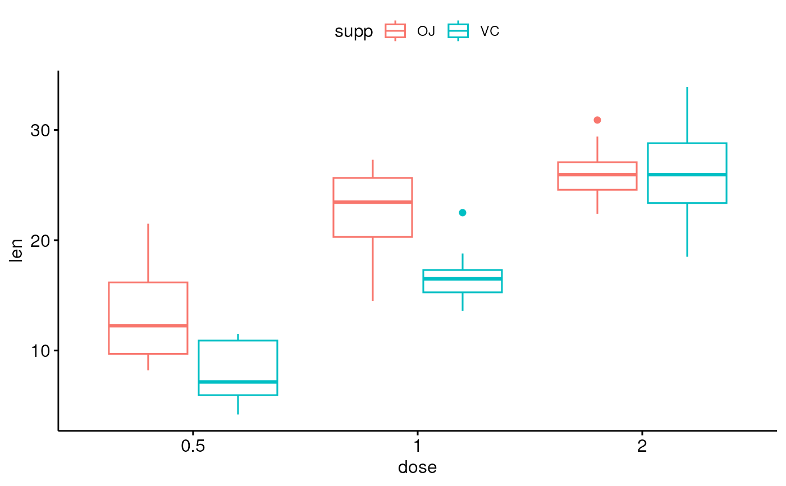
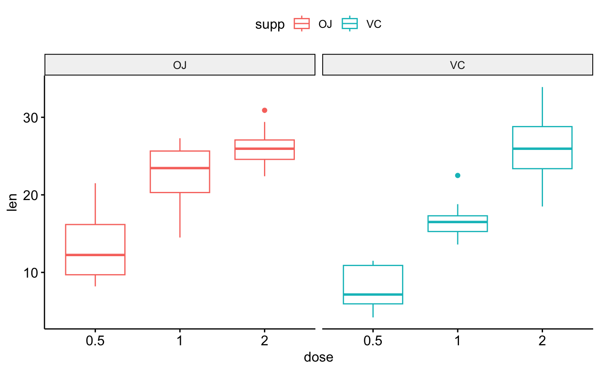
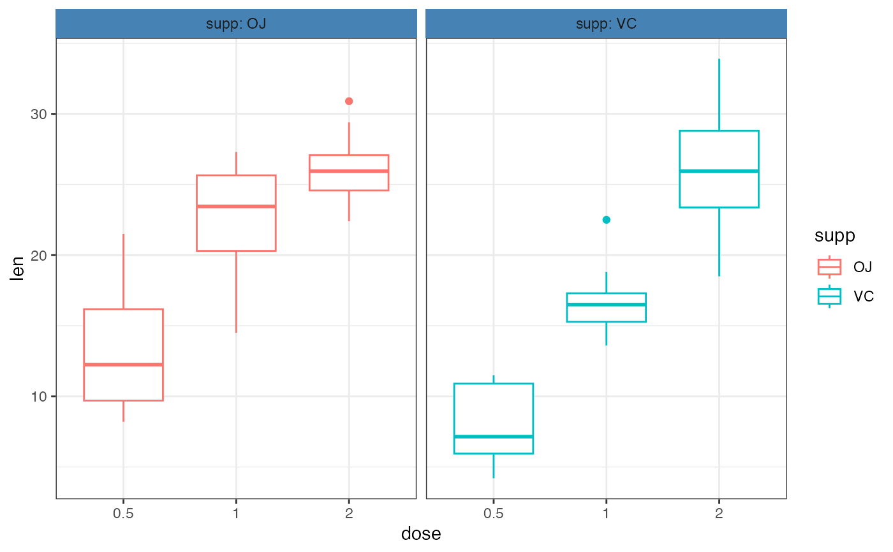

facet.RdCreate multi-panel plots of a data set grouped by one or two
grouping variables. Wrapper around facet_wrap
facet(p, facet.by, nrow = NULL, ncol = NULL, scales = "fixed", short.panel.labs = TRUE, panel.labs = NULL, panel.labs.background = list(color = NULL, fill = NULL), panel.labs.font = list(face = NULL, color = NULL, size = NULL, angle = NULL), panel.labs.font.x = panel.labs.font, panel.labs.font.y = panel.labs.font, ...)
| p | a ggplot |
|---|---|
| facet.by | character vector, of length 1 or 2, specifying grouping variables for faceting the plot into multiple panels. Should be in the data. |
| nrow, ncol | Number of rows and columns in the panel. Used only when the data is faceted by one grouping variable. |
| scales | should axis scales of panels be fixed ("fixed", the default), free ("free"), or free in one dimension ("free_x", "free_y"). |
| short.panel.labs | logical value. Default is TRUE. If TRUE, create short labels for panels by omitting variable names; in other words panels will be labelled only by variable grouping levels. |
| panel.labs | a list of one or two character vectors to modify facet panel labels. For example, panel.labs = list(sex = c("Male", "Female")) specifies the labels for the "sex" variable. For two grouping variables, you can use for example panel.labs = list(sex = c("Male", "Female"), rx = c("Obs", "Lev", "Lev2") ). |
| panel.labs.background | a list to customize the background of panel labels. Should contain the combination of the following elements:
For example, panel.labs.background = list(color = "blue", fill = "pink", linetype = "dashed", size = 0.5). |
| panel.labs.font | a list of aestheics indicating the size (e.g.: 14), the face/style (e.g.: "plain", "bold", "italic", "bold.italic") and the color (e.g.: "red") and the orientation angle (e.g.: 45) of panel labels. |
| panel.labs.font.x, panel.labs.font.y | same as panel.labs.font but for only x and y direction, respectively. |
| ... | not used |
facet(p, facet.by = "supp")# Customize facet(p + theme_bw(), facet.by = "supp", short.panel.labs = FALSE, # Allow long labels in panels panel.labs.background = list(fill = "steelblue", color = "steelblue") )